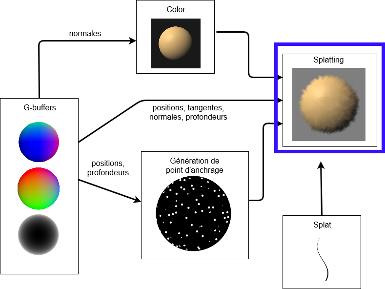

Stylisation implicite de scènes 3D à l'étape du compositing
Maxime Isnel
supervisé par Joëlle Thollot et Romain Vergne


Sommaire
- Introduction
- État de l'art
- Stylisation procedurale
- Résultats
- Conclusion
Synthèse d'image

Rendu non photoréaliste


Notre stylisation
Notre but:
- Donner des outils pour styliser
- Cohérence temporelle
La cohérence temporelle
[Bénard, 2011]:
- Continuité temporelle
- Cohérence du mouvement
- Aspect 2D
La continuité temporelle
Loving Vincent, 2017La cohérence du mouvement
L'aspect 2D
Sommaire
- Introduction
- État de l'art
- Stylisation procedurale
- Résultats
- Conclusion
Espaces de travail
Espace objet

Espace image
insérer G-buffer
Primitive de dessin


Etat de l'art
| Objet | Image | |||
|---|---|---|---|---|
 [Schmid et al,2011]
[Schmid et al,2011]
|
||||
| en espace objet | ++ | ++ | -- | - |
| en espace image | - | -- | ++ | -- |
| À base de marques | ||||
| en espace objet | ++ | ++ | +/- | +/- |
| en espace image | - | -- | ++ | + |
02. État de l'art
Rendu à base de marques
Principe: faire un rendu graphique à partir de dessin d'images 2D
aglorithme d'Hertzmann pour styliser une image
02. État de l'art
Rendu à base de marques
Espace objet
OverCoat: an implicit canvas for 3D paintingEspace image

Rendu à base de marques
Examples
Espace objet
OverCoat: an implicit canvas for 3D painting
Espace image
From image parsing to painterly renering, [Zeng, 2009]Rendu à base de marques
avantages et inconvénients
02. État de l'art
Conclusion état de l'art
| Technique | Cohérence du mouvement | Continuité temporelle | Aspect 2D | Variété de style |
|---|---|---|---|---|
| À base de textures | ||||
| en espace objet | ++ | ++ | -- | - |
| en espace image | - | -- | ++ | -- |
| À base de marques | ||||
| en espace objet | ++ | ++ | +/- | +/- |
| en espace image | - | -- | ++ | + |
Sommaire
- Introduction
- État de l'art
- Stylisation procedurale
- Résultats
- Conclusion
03. Stylisation procedurale
Vue d'ensemble
03. Stylisation procedurale
Étape du compositing
- informations sur la géometrie déjà rendu
- peut être intégrer dans des pipelines sans structure particulière
03. Stylisation procedurale
Bruits procéduraux
Examples de bruits procéduraux
 Perlin
Perlin
 Gabor
Gabor
03. Stylisation procedurale
Bruits procéduraux
Examples d'usage de bruits procéduraux
 Marbre
Marbre
 Feu
Feu
 Bois
Bois
03. Stylisation procedurale
Bruit de Worley
03. Stylisation procedurale
Principe de calcul

- grille
- point aléatoire
- distance avec le plus proche
03. Stylisation procedurale
Bruit de Worley
Constance de la taille des point quand la fréquence du bruit change
03. Stylisation procedurale
Bruit de Worley
Constance de la taille des point quand la distance à la caméra change
03. Stylisation procedurale
Fractalisation
Pourquoi ?
03. Stylisation procedurale
Fractalisation
03. Stylisation procedurale
Fractalisation
03. Stylisation procedurale
Fractalisation
comment ça marche

03. Stylisation procedurale
Splatting
Qu'est ce que c'est?


03. Stylisation procedurale
Splatting

03. Stylisation procedurale
Splatting
03. Stylisation procedurale
Splatting
Le mélange des splats
- Profondeur
- Du poids du bruits
- Paramêtre utilisateur
Sommaire
- Introduction
- État de l'art
- Stylisation procedurale
- Résultats
- Conclusion
04. Résultats
Résultats
Sommaire
- Introduction
- État de l'art
- Stylisation procedurale
- Résultats
- Conclusion
05. Conclusion
Limitations
- pas paramétrisation
- Aliasing
- Convolution
05. Conclusion
Travaux futurs
- Objets déformables et scènes dynamiques
- Aspect du bruit
- Aspect des marques
05. Conclusion
Conclusion
- Outil paramétant la stylisation
- Travail sur le bruit Worley
- Variation des styles